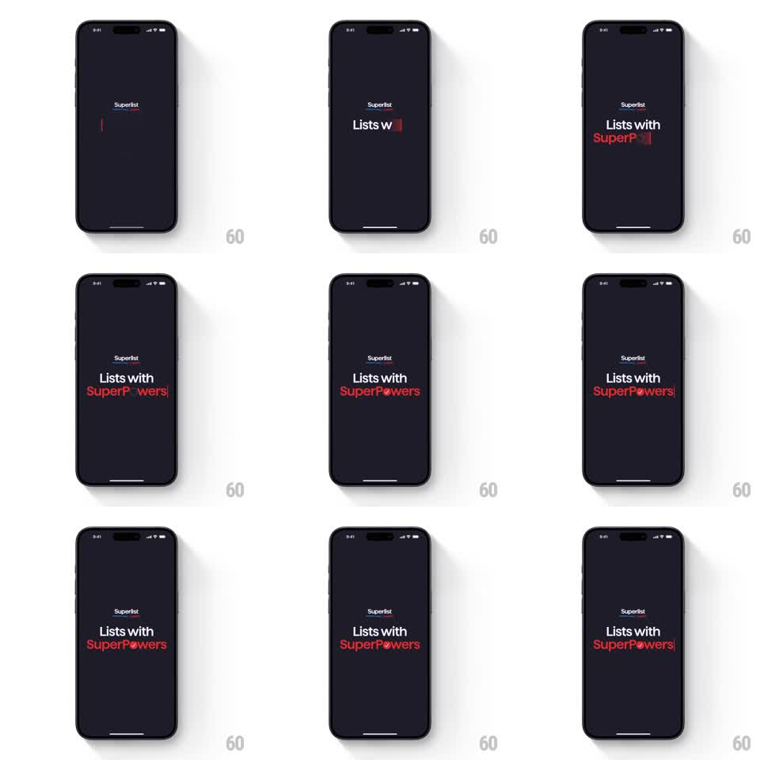

Media
Frame-by-frame

Rebuild this animation 1:1: Superlist's splash - on a near-black screen the tagline types itself out: "Lists with" in white, "SuperPowers" in red, its "o" swapped for the springy app icon, ending with a blinking cursor.

Rebuild this animation 1:1: Superlist's splash - on a near-black screen the tagline types itself out: "Lists with" in white, "SuperPowers" in red, its "o" swapped for the springy app icon, ending with a blinking cursor. ## Integration Integration: stack-agnostic spec - springs given as stiffness/damping, timed motions as duration + curve; map every value to your framework and animation library of choice. ## Scene Near-black screen, small white "Superlist" wordmark near the top. Center: the two-line tagline - "Lists with" (white) over "SuperPowers" (red) - typed progressively with a thin red block cursor. The "o" in "Powers" is the app's rounded icon glyph instead of a letter. ## Motion spec Pattern: theatrical typing reveal with a springy icon glyph. - A red cursor blinks twice alone (530ms cycle), then types "Lists with" character by character (~70ms/char). - After a 250ms beat, the second line types "SuperP" (red, same cadence), then the icon glyph slams in where the "o" belongs: scale 2.2 -> 0.92 -> 1 with rotation (spring ~300/12, 450ms), briefly squashing the cursor aside. - The remaining "wers" types out behind it (70ms/char) and the cursor blinks on at the end. - The whole lockup settles with a 200ms ease to its final centered position. ## Calibration - The icon's entrance is the only big move - overshoot must read playful, not broken (under 20% scale error). - Typing cadence is steady; drama comes from pauses, not speed changes. ## Reduced motion Tagline fades in fully formed (300ms); icon pops without overshoot. ## Don't miss - Exact colors: white first line, red second line, red cursor, dark background - no gradients. - The icon replaces the letter; it is not placed on top of one.